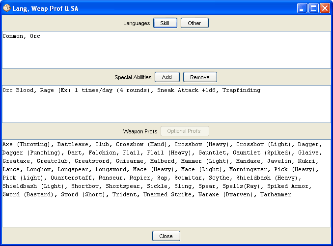

The Abilities window is where you can assign Languages, see your special abilities (granted by race & class), add & remove special abilities, see your existing weapon proficiencies, and add more weapon proficiencies.
The Languages section consists of the display window, where your languages known will be displayed, the Skill & Other buttons which will bring up a selection window to choose languages from. The Skill button allows you to choose languages based on skill points spent and the Other button allows you to select languages based upon your character stats.
The Special Abilities consists of the display window, where all Special Abilities gained from races and/or classes is displayed and the Add & Remove buttons. The Add will bring up a window that allows you to type in your own Special Abilities or select from a list of Special Abilities pulled from the loaded sources. The Remove button is used to remove Special Abilities added with the Add button. You can only remove Special Abilities you enter yourself, Special Abilities granted by races, classes or other sources cannot be removed.
The Weapon Profs consists of the display window, which is populated by your racial and class weapon proficiency lists, and the Optional Profs button that will bring up a new window for you to choose any weapon proficiencies granted by a race, feat, or class.